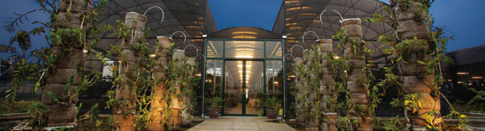
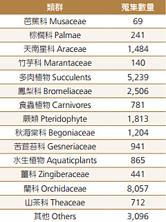
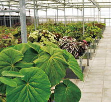
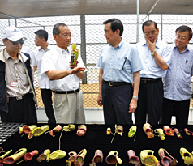
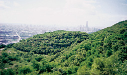

永續生態
保種中心 - 辜嚴倬雲植物保種中心

「財團法人辜嚴倬雲植物保種暨環境保護發展基金會」由台灣水泥股份有限公司、和平電力股份有限公司、中國合成橡膠股份有限公司及財團法人劍潭古寺等四家營利及非營利組織於2007年元月所成立，最主要之推動工作為設立「辜嚴倬雲植物保種中心」於屏東縣高樹鄉，使命為保育全世界熱帶及亞熱帶植物，以永續地球上最豐富的生物多樣性，以行動落實台泥永續發展及環境保育之理念。
保種中心以異地活體保存，學術研究為本，透過國際學術交流，參與世界熱帶植物保育計畫，發展為世界級熱帶植物保種基地，預計20年內達成30,000種活體植物之目標。2015年持續擴充熱帶植物活體蒐藏，同時發展雲霧林植物保種。
收藏進度

保種中心截至2015年底為止，已成功培育27,589種來自世界各地的熱帶暨亞熱帶植物（含霧林帶植物在內），規模為亞洲第一。其中蘭科、鳳梨科、秋海棠科、食蟲植物及蕨類植物的收藏量更是世界之最，讓台灣成為全球植物之保種重鎮。保種中心栽種近8萬株植物均以數位化管理，附有電腦標籤條碼，可隨時查詢植物種名、原產地及栽植等資訊。
2015年11月由保種中心資深蒐藏經理聯合大陸中科院廣西植物研究所，至台泥大陸貴港廠石灰岩礦區與周邊山區進行考察，不僅是兩岸之間第一次針對礦區遷地保育的行動，也是植物園保育單位與資源開發單位的一項成功合作。另也針對貴港廠區之綠美化給予建議，提出之礦區內特有或原生植物，除具有觀賞、耐旱及耐修剪之外，亦兼具耐粉塵與快速綠化之特性。同時，也期望這次工作完成之後，可逐步推廣至其他廠區，或是其他環境資源開發單位，以求資源利用與環境保護能達成平衡與永續。
歷年及2015年成果
- 保種中心在貴港廠廠區及其周邊山區一共引種活體134種332份；仙湖植物園引種活體106種，標本6號；廣西植物所引種活體50種，標本60號。
- 保種中心在廣西植物所引種54種，121份，其中許多為特有種或尚未發表新種。
- 為協助台泥廠方綠美化需求，提供原生植物建議清單共計45種。
- 完成貴港廠廠區與周邊重要石灰岩植物名錄一份，共計238種。
種源管理

熱帶及亞熱帶植物需要多樣的生存環境，如秋海棠科多喜歡涼爽，濕度高之環境；多肉植物則多喜歡陽光充足，通風且溫度高的地方。因此，溫室設計得隨植物特性不同而調整，雖不能完美量身打造原始生長環境，但都盡可能符合植物正常成長所需。保種中心歷經7年擴充，目前已有15間溫室，多以遮光網調節光度，採逆滲透噴霧系統定時噴霧，以控制溼度及降溫。其中3間特別採水簾式溫室設計，利用大型風扇設備和水牆降低夏季高溫，營造陰涼及潮濕的環境，室內外溫差最高可達攝氏6度，用以栽培蘭科、茶科、蕨類、秋海棠科、苦苣苔科、天南星科等。
國際交流與教育研究

熱帶及亞熱帶植物需要多樣的生存環境，如秋海棠科多喜歡涼爽，濕度高之環境；多肉植物則多喜歡陽光充足，通風且溫度高的地方。因此，溫室設計得隨植物特性不同而調整，雖不能完美量身打造原始生長環境，但都盡可能符合植物正常成長所需。保種中心歷經7年擴充，目前已有15間溫室，多以遮光網調節光度，採逆滲透噴霧系統定時噴霧，以控制溼度及降溫。其中3間特別採水簾式溫室設計，利用大型風扇設備和水牆降低夏季高溫，營造陰涼及潮濕的環境，室內外溫差最高可達攝氏6度，用以栽培蘭科、茶科、蕨類、秋海棠科、苦苣苔科、天南星科等。
2015年5月馬英九總統在基金會董事長辜成允先生及執行長李家維教授陪同下，參訪保種中心且對於中心蒐藏2萬多種原生植物及研究成果，表示很感謝此園區對熱帶植物的保種貢獻，整個的蒐集和研究成果讓人振奮。7月由行政院人事行政總處舉辦安排「國家政務研究班第九期」研究人員及「高階領導研究班第八期」研究人員等48人參訪保種中心，參訪主題為「環境永續－打造熱帶植物之諾亞方舟」。保種中心李執行長予以詳細解說，學員對於企業捐贈保種中心於環境永續之貢獻，留下極為深刻之印象。
復育礦山植被

目前台泥礦山皆未被劃分為生態保育或復育區域，亦無受法規要求需進行生物多樣性管理，然而，台泥秉持環境保護及企業社會責任實踐之原則，多年來除陸續在各水泥廠增添收塵設備，同時在礦區植生綠化，以降低裸露面積，加強水土保持功能，營造動植物生態環境及促進礦區整體美感。台泥目前現有寶來、合盛與和平三礦區，三個礦區可採量總計在2.7億至3億噸之間。台泥以力行環保作為公司核心價值，和平廠採豎井開採模式，礦山開採同步進行植生綠化，對環境景觀衝擊降至最低。
台泥壽山礦區已全面停採，依台泥之植生計畫，將原本祼露石灰岩等不適於植物生長的環境，填土整修佈置成適於生物生長適宜之環境，目前植物已逐漸恢復生機，蛇類、山豬、猴子及野鳥等野生動物亦返回棲息地。
生態保育
台泥認為環保與經濟發展應是相輔相成的，充分做到保護環境與經濟發展的良性循環，以促進企業永續發展。因此，積極推行「建立制度落實環保、提升技術改善製程、節能減廢預防污染、美化景觀回饋社會」的環境政策。
過去20年來，台泥自民國81年起即陸續贊助拍攝了「台灣野鳥百年紀」、「追逐夏日的鳥－台灣的燕鷗」、「栗背林鴝」等生態影片，希望藉此拋磚引玉，喚起社會大眾、企業界及政府，體認生態保育對生活品質的重要性，全民共同來推動生態保育的工作，影片推出以後，獲得極大的迴響。